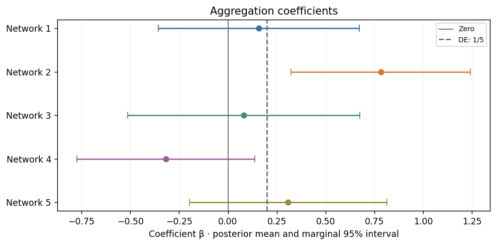
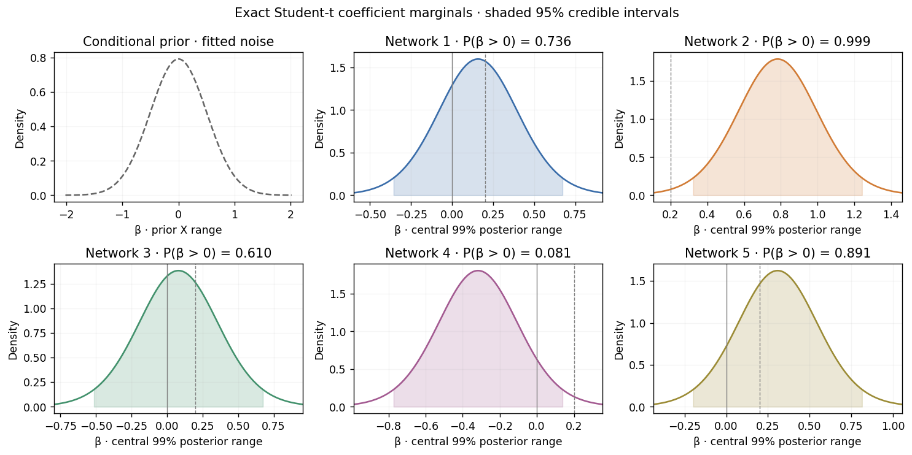
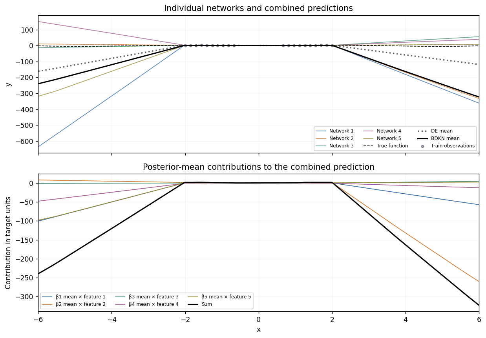
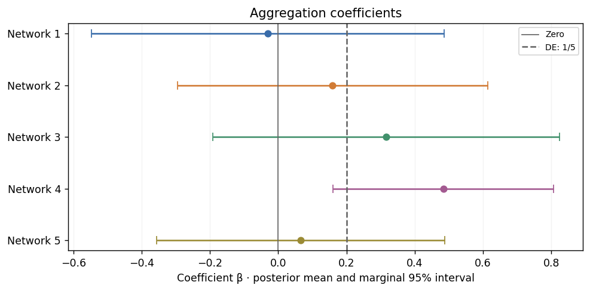
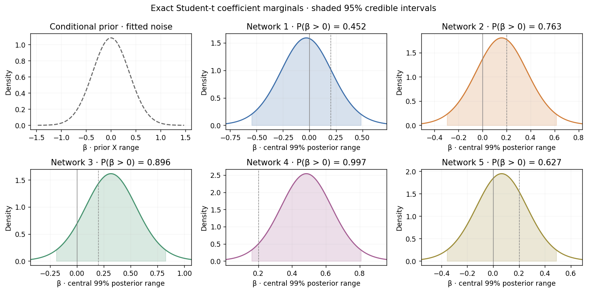
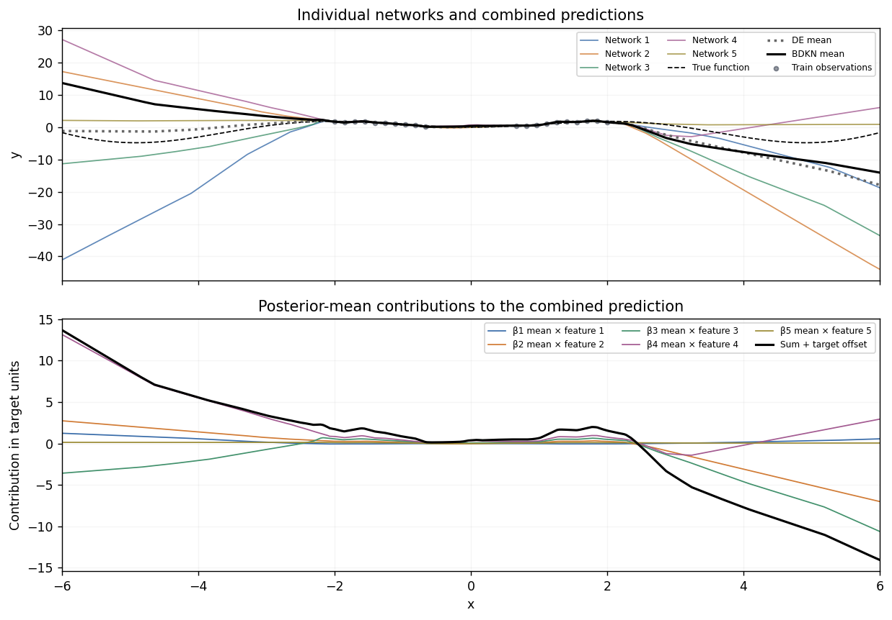
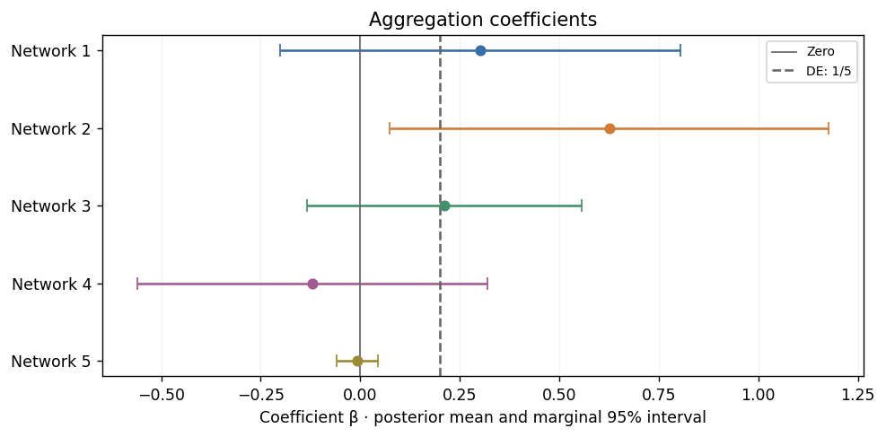
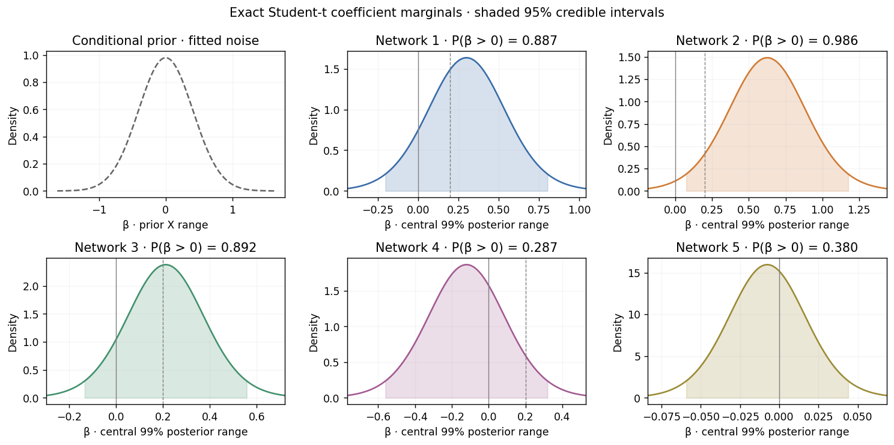
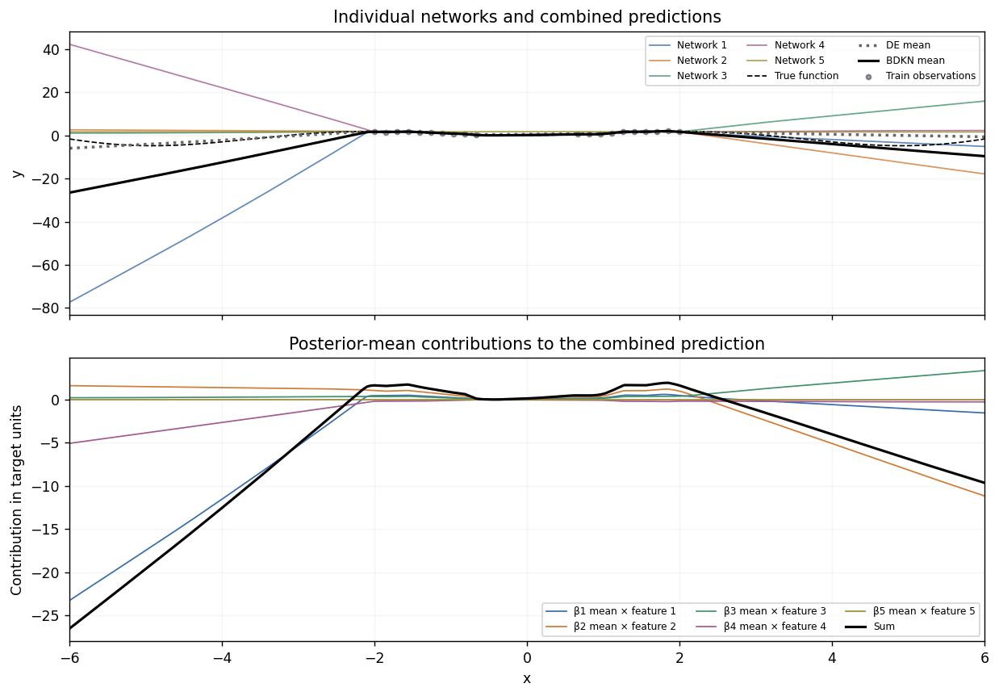

Regression comparison
Download resultsAggregation weights
Coefficients can be negative and need not sum to one. Intervals describe coefficient uncertainty; the dashed reference is DE’s fixed 1/H weight.
BDKN


Each density panel uses its own X range for readability; coefficient intervals above share a common axis. Prior reference conditions on fitted noise. Contribution shares use held-out inputs; test targets are used only for scoring.
| Network | β mean | 95% low | 95% high | P(β > 0) | Contribution share | Test RMSE | Test NLL |
|---|---|---|---|---|---|---|---|
| 1 | 0.40229 | -0.37084 | 1.17542 | 0.85467 | 0.35791 | 3.67243 | 518.48181 |
| 2 | 0.20446 | -0.59245 | 1.00137 | 0.70079 | 0.22500 | 4.14006 | 525.64604 |
| 3 | 0.00120 | -0.58351 | 0.58591 | 0.50169 | 0.00156 | 4.57182 | 116.63683 |
| 4 | 0.38991 | -0.39517 | 1.17498 | 0.84372 | 0.40443 | 3.92271 | 432.30151 |
| 5 | 0.00942 | -0.80302 | 0.82186 | 0.50953 | 0.01111 | 4.38657 | 253.42808 |
Functional repulsion · BDKN



Each density panel uses its own X range for readability; coefficient intervals above share a common axis. Prior reference conditions on fitted noise. Contribution shares use held-out inputs; test targets are used only for scoring.
| Network | β mean | 95% low | 95% high | P(β > 0) | Contribution share | Test RMSE | Test NLL |
|---|---|---|---|---|---|---|---|
| 1 | 0.15835 | -0.35574 | 0.67244 | 0.73608 | 0.25468 | 235.81157 | 1382787035.30901 |
| 2 | 0.78247 | 0.32326 | 1.24169 | 0.99901 | 0.47863 | 113.26782 | 250069176.77831 |
| 3 | 0.08040 | -0.51349 | 0.67428 | 0.60972 | 0.01002 | 21.48382 | 1437031.90140 |
| 4 | -0.31702 | -0.77221 | 0.13817 | 0.08090 | 0.09864 | 52.67785 | 227515144.88737 |
| 5 | 0.30808 | -0.19815 | 0.81431 | 0.89058 | 0.15802 | 101.88482 | 1116.90341 |
Weight repulsion · BDKN



Each density panel uses its own X range for readability; coefficient intervals above share a common axis. Prior reference conditions on fitted noise. Contribution shares use held-out inputs; test targets are used only for scoring.
| Network | β mean | 95% low | 95% high | P(β > 0) | Contribution share | Test RMSE | Test NLL |
|---|---|---|---|---|---|---|---|
| 1 | -0.03008 | -0.54639 | 0.48622 | 0.45224 | 0.03736 | 11.54882 | 16567008.64703 |
| 2 | 0.15923 | -0.29538 | 0.61383 | 0.76326 | 0.24156 | 14.45832 | 38520017.64084 |
| 3 | 0.31647 | -0.19165 | 0.82459 | 0.89567 | 0.34961 | 9.16059 | 1418474.25245 |
| 4 | 0.48421 | 0.16117 | 0.80725 | 0.99734 | 0.35904 | 9.87119 | 77.45021 |
| 5 | 0.06619 | -0.35572 | 0.48810 | 0.62655 | 0.01242 | 3.37230 | 1633624.82662 |
First-order repulsion · BDKN



Each density panel uses its own X range for readability; coefficient intervals above share a common axis. Prior reference conditions on fitted noise. Contribution shares use held-out inputs; test targets are used only for scoring.
| Network | β mean | 95% low | 95% high | P(β > 0) | Contribution share | Test RMSE | Test NLL |
|---|---|---|---|---|---|---|---|
| 1 | 0.30094 | -0.20160 | 0.80348 | 0.88699 | 0.47571 | 23.11582 | 78.05887 |
| 2 | 0.62538 | 0.07408 | 1.17669 | 0.98591 | 0.30472 | 5.05138 | 4546235.40260 |
| 3 | 0.21128 | -0.13428 | 0.55684 | 0.89160 | 0.10174 | 7.81956 | 19947.69743 |
| 4 | -0.12029 | -0.56028 | 0.31970 | 0.28742 | 0.11631 | 15.58248 | 1994395.48541 |
| 5 | -0.00764 | -0.05915 | 0.04387 | 0.38009 | 0.00152 | 3.53852 | 1829006.94925 |